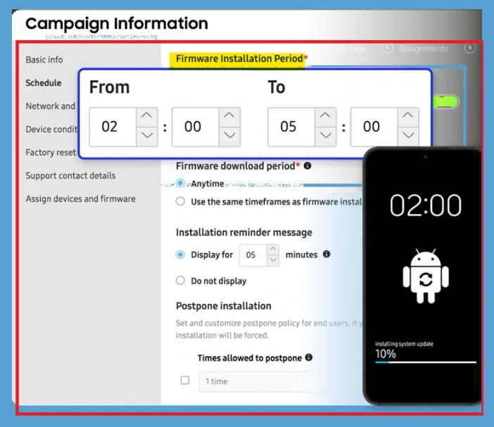
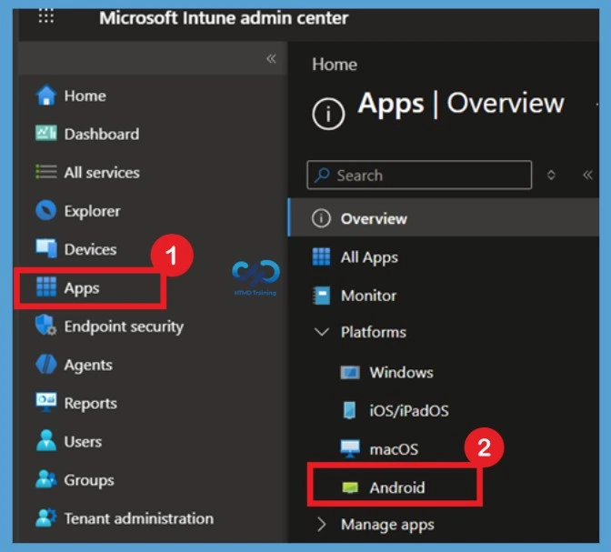
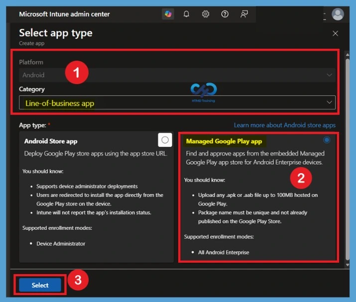

Key Takeaways
- Manage Samsung Galaxy firmware updates directly from Microsoft Intune.
- Test new firmware versions before broad deployment.
- Roll out updates in phases to reduce risks.
- Control update timing with maintenance windows and battery requirements
In this post we are discussing Manage Samsung Galaxy Firmware Versions to Improve Security and Compliance using Microsoft Intune. Microsoft Intune has received a new update that expands firmware management capabilities for Samsung Galaxy devices through Firmware Versionsintegration. This enhancement gives IT administrators more control over firmware and operating system updates, helping them manage device updates more efficiently across their organization.
Table of Contents
Manage Samsung Galaxy Firmware Versions to Improve Security and Compliance using Microsoft Intune
Managing firmware updates becomes more challenging as the number of mobile devices increases. Organizations often need to test new firmware versions before deploying them to all users to avoid compatibility issues with business applications. With this update, administrators can use existing Intune device groups to assign and manage firmware versions for Samsung Galaxy devices. This allows organizations to keep production devices on a stable version while testing new firmware releases on a smaller group before a deployment.
What’s New in Samsung Knox E-FOTA Integration
This update introduces Samsung Knox E-FOTA integration with Microsoft Intune, giving administrators more control over Samsung Galaxy firmware and OS updates. IT teams can now use existing Intune device groups to manage firmware versions and update deployments more effectively.
With Samsung Knox E-FOTA integration, administrators can gain greater control over firmware update deployments for managed Samsung devices. The feature allows organizations to define installation windows, schedule firmware updates, and manage how updates are delivered to users.
- The below Knox E‑FOTA campaign scheduling screen, where admins define when firmware updates install on managed Samsung devices.
| What’s New in Samsung Galaxy Firmware | Information |
|---|---|
| Firmware control | Enterprise Firmware‑Over‑The‑Air (E‑FOTA) integration now available in Intune for Samsung Galaxy devices. |
| Device group targeting | Firmware assignments follow Intune device group membership automatically. |
| Battery and postponement rules | Admins can enforce battery requirements and postponement limits for installation timing. |

Access Android App Management
To begin integrating Samsung Knox E-FOTA with Microsoft Intune, navigate to the Apps section in the Intune admin center. This area allows administrators to manage applications and services that support Android Enterprise devices. Sign in to the MS Intune, From the Apps, select Android to view Android-specific application management options. This is where administrators can add and deploy apps required for Samsung Knox management, including the Knox Service Plugin.

Select Managed Google Play App
To add the Samsung Knox Service Plugin in Microsoft Intune, navigate to the Android app creation and select the appropriate platform and category. In this example, the Android platform is selected, and the Line-of-business app category is used to begin the app deployment process. Next, choose Managed Google Play app as the app type. Managed Google Play allows administrators to discover, approve, and deploy Android Enterprise applications directly from Intune.

Reference
What’s new in Microsoft Intune – July
Need Further Assistance or Have Technical Questions?
Join the LinkedIn Page and Telegram group to get the latest step-by-step guides and news updates. Join our Meetup Page to participate in User group meetings. Also, join the WhatsApp Community and the WhatsApp channel to get the latest news on Microsoft Technologies. We are there on Reddit as well.
Author
Anoop C Nair is a Workplace Technology solution architect with 25+ years of experience. Microsoft Certified Trainer. Microsoft MVP from 2015 onwards for consecutive 11+ years! He is a blogger, Speaker, and Founder of HTMD Community and HTMD Conference. His main focus is on Device Management technologies like Intune, Windows, and Cloud PC. He writes about technologies like Intune, SCCM, Windows, Cloud PC, Entra, and Microsoft Security.